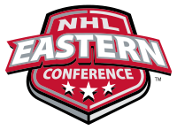
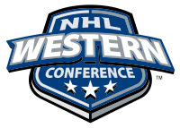

All About Hockey
Leagues
There many hockey leagues around the world such as:
- AHL- American Hockey League. (American league)
- KHL- Kontinental Hockey League. (Russian league)
- OHL- Ontario Hockey League. (Ontario/Canadian league)
- SHL- Swedish Hockey League. (Swedish league)
And many more all around the world.
The main hockey league is called the
NHL or the National Hockey League. It had started with 6 teams: the Montreal Canadiens,
the Boston Bruins, the Chicago Blackhawks, the Detroit Red Wings, the New York Rangers, and the Toronto Maple Leafs.
These teams are referred to as the Original Six. The league has now expanded to 31 teams which
are split into 2 conferences with 2 divisions and wildcards Which include:
- - Eastern Conference
- - Metropolitan Division
- - Atlantic Division
- - Wildcard Spot
- - Western Conference
- - Central Division
- - Pacific Division
- - Wildcard Spots
|  |  |
|---|
Recruiting
The NHL recruits players from many different leagues but more-so from North American based leagues such as the OHL and the AHL. The players can be recruited from try-outs, scouting, and through drafts. The bottom 14 teams in the league's standings are put into a lottery for who gets first pick. The picture below shows last year's first round draft pick, Connor Mcdavid who was drafted by the Edmonton Oilers and is now one of the best players in the league‼;

Back to the Top